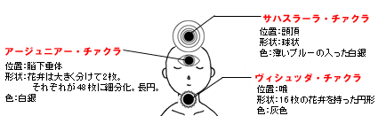
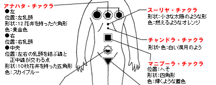
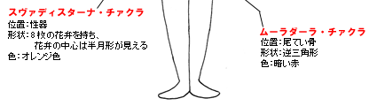

  
◆チァクラはわたしたちの身体にある霊的センター
チァクラの開発は、クンダリニーと並んで、わたしたちの霊的修行を進める上で必要不可欠なものだ。
チァクラとは、人間の身体にある霊的なセンターのこと。だれでも身体のそれぞれの場所に持っている。だが、普通の人はそれが眠った状態にあり、活動していない。チァクラがその威力を発揮し始めるのは、わたしたちが修行を始め、クンダリニーが覚醒してからだ。
◆チァクラはクンダリニーの上昇とともに活性化される
クンダリニーが覚醒すると、スシュムナー管に沿ってクンダリニーが上昇していく。そのとき、各チァクラを開発していくことができる。
主なチァクラは七つあり、その他にやや小さい二つのチァクラがある。
チァクラは、身体の下部に位置するものに比べて、上部へ行くほど次元が高い。
そして正しい修行を行なっていけば、わたしたちはチァクラを開発することができる。そして、ムーラダーラ・チァクラの超健康体に始まり、肉体から完全に離脱することを可能にするサハスラーラ・チァクラまで、各チァクラが有している様々な能力や神秘的な力を身に付けることができる。
◆六つのチァクラの漏れをなくし七番目の門を開く
サハスラーラ・チァクラ以外のチァクラを開発すると素晴らしい恩恵が得られるのだが、使ったチァクラからはエネルギーが漏れることになる。そのため、より高度な修行の実践は、六つのチァクラを完全に使いこなすことができながらそれに対して一切心がとらわれない状態、各チァクラから、エネルギーが漏れない状態をつくることだ。
そうすれば、七番目のサハスラーラ・チァクラの門が開き、肉体とは別の「歓びの身体」と呼ばれる身体を抜け出させることができる。この第七の門を自由自在に使えるようになったとき、わたしたちは様々な苦悩から完全に解放された境地を体験することができるのだ。